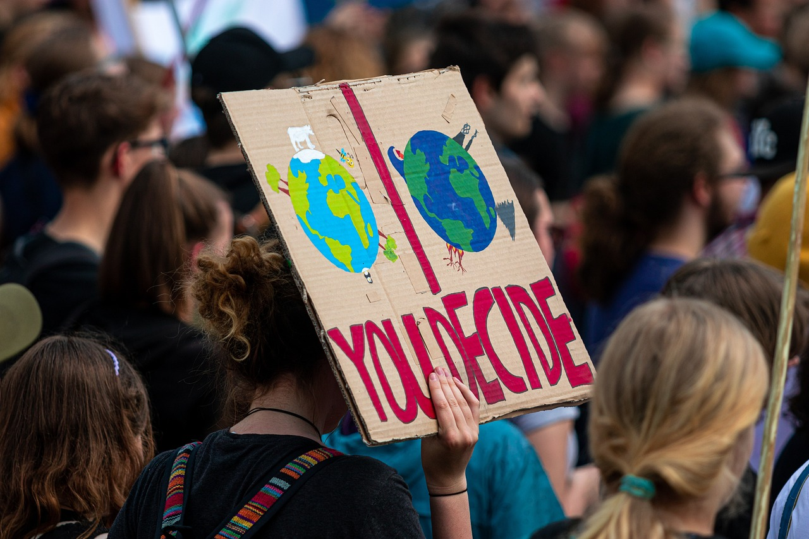

Demonstration Fridays for Future image by Pixabay
About this site
Dean Shimabukuro, a student in the Bellevue College Digital Marketing BAS program, is a concerned citizen regarding climate control policies, specifically surrounding greenhouse gases. He created this site to bring awareness to this issue.